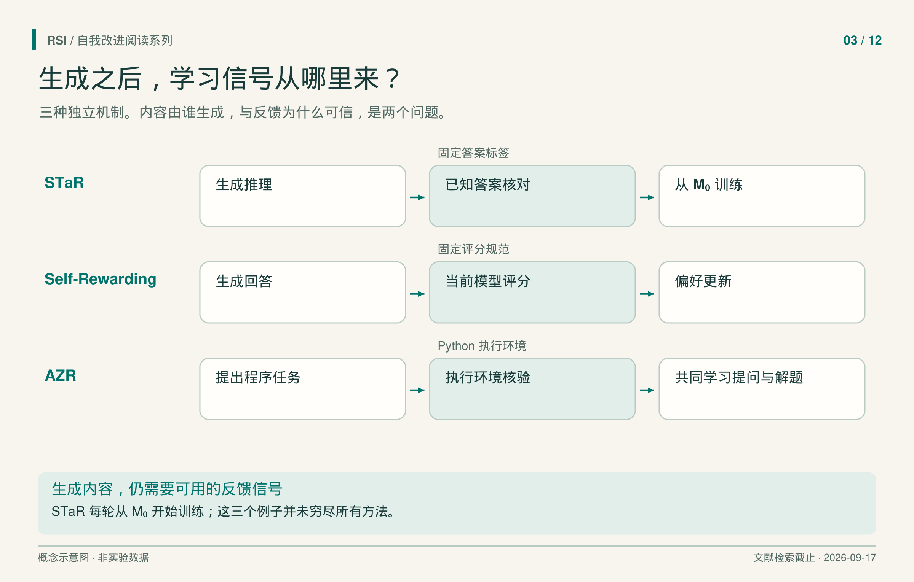

模型能生成的回答，远多于人能逐条标注的数量。这解决了训练文本的供应问题，却留下选择问题：下一代应该模仿哪些回答，凭什么判断它们值得学？
理解自训练研究，可以沿着这条信息线索走。已知答案能筛选生成的解释；参考回答能锚定比较；模型能按固定规范评价候选；执行环境能检查程序。即使大部分文字来自同一个模型，这些信号承担的工作仍然不同。
先追踪筛选依据，再看文字由谁生成。
有答案，但缺解释
STaR从带正确答案的问题集和少量推理示范出发。模型生成推理解释及答案，只有答案与标签匹配的样本才进入训练集。
它解决的是一种具体短缺：数据已经告诉我们答案，却没有足够的解释供训练。难题还会带来第二个问题：模型一直答不对，就始终无法贡献样本。因此 STaR 还把正确答案作为提示，让模型尝试解释如何得到它；成功样本用于训练时，会从输入中移除答案提示。
每轮的训练起点尤其重要。STaR 在新生成并筛选的数据上，重新微调原始预训练模型，而非继续训练上一轮权重。上一轮模型影响下一轮数据，训练起点则保持固定。
设想一道选择题：模型选对了选项，却给出没有根据的解释。这个教学例子能通过答案核对，说明检查终点不能单独保证推理忠实。STaR 的筛选依赖外部答案标签，论文也保留了这一限制。
参考回答已经学过，还能怎么用？
假设模型已经做过监督微调，也就是学习模仿一组参考回答。SPIN改变了与这些参考回答比较的对象，以继续利用同一批示范。
每轮让当前模型生成新回答，再依据它们与固定参考回答的对照训练。更新后的模型成为下一轮生成对手回答的模型。对手会变，目标分布仍由既有示范锚定。
这里“无需新增人工标注”的范围很具体。实验的 UltraChat 参考回答原本来自外部 OpenAI Turbo API，因此外部示范仍然存在。其分布匹配理论还依赖可实现性、全局最优化等假设。实验展示了有限次更新，效果因任务而异，不能推出无限自博弈的持续收益。
连偏好也由模型提供
模型变化后，固定评价器可能难以辨别有用差异。Self-Rewarding Language Models让当前模型同时担任回答者和评分者，依据固定规范打分。每个问题生成四个回答，每个回答打三次分并取平均；除去同分情形，最高和最低分回答组成偏好对。
随后，直接偏好优化 DPO 提高模型选择较好回答、相对于较差回答的倾向。权重更新同时改变下一轮回答者和裁判。主实验从监督微调的种子模型出发，进行两次 DPO，分别使用 3,964 和 6,942 对偏好数据。
外部支持仍在：种子包含指令示例及按人类排序筛选的评价示例；固定的 Llama 2-Chat 产生新问题；评分规范保持固定；Claude 2 在验证样本上选择早停位置。
裁判是否真的变好？在另留的 541 条 Open Assistant 评价样本上，成对排序与人类的一致率从种子模型的 78.7% 升至最终模型的 81.7%。但“5-best”在两次更新后的模型间，从 44.3% 降至 43.2%。它衡量模型打出满分 5/5 的回答中，有多少在人类排序中居首。这里的五指评分，不是候选数量；该评价平均每条指令有 2.85 个回答。这些结果测量的是人类偏好一致性，并非客观事实正确性，趋势还取决于指标。更长训练链和奖励投机仍是作者指出的未决问题。

三条路径比较机制，并非历史继承关系。STaR 从原始模型重训；评分模型变化，不等于评分规范变化。
练习题也可以变化
Absolute Zero Reasoner，简称 AZR，用同一个预训练策略提出并求解程序推断任务。研究者定义任务类型，Python 执行环境构造并检查答案，提议与求解两个角色共同参与策略更新。
提议者需要选出合适难度。每个候选任务采样八次求解；若全失败，提议奖励为零，否则奖励为一减去当前成功比例。因此，全做对也没有奖励，至少一次成功但成功率较低的题奖励较大。
这依据的是当前表现。论文称之为“可学习性”，但没有直接测量练完这道题后未来能力会增加多少。“零数据”则指自博弈阶段不用外部策展的问题与答案。预训练、任务定义、过滤规则、奖励与执行环境仍然存在。执行中的两次重复一致检查也只是近似，不能证明程序对所有输入都确定。
学习怎样准备自己的适应材料
Zweiger 等人的 SEAL进一步问：模型能否学会把新材料变成适合自己吸收的训练内容？这里是《Self-Adapting Language Models》，与 Guo 等人的同名验证系统不同。
以一本新手册为教学例子，模型可以先将内容改写成训练文本。内环用一份候选编辑做适应，通过 LoRA 更新附加的低秩参数；外部任务再检查适应后的表现。外环据此学习生成更有帮助的编辑。
在手册例子中，改写得流畅只是候选的表面属性。让两份编辑分别从相同起点做适应，再评价结果，才能比较它们究竟教会了模型什么。若只看文字是否漂亮，回答的就是另一个问题。下游任务决定外环应该学习生成哪种编辑，因而是机制的必要组成部分。
关键反馈来自“学过这份编辑之后”的表现。候选编辑分别在独立分支测试，并非全部依次永久叠加。内环更新函数和外部评价任务仍然固定，模型仍需要带参考答案的下游任务来辨别哪份编辑有用。
ARC 是网格变换推理基准。SEAL 选取了小规模任务子集，这些任务已有一套已知的人工设计测试时训练配置，能让基座模型解出。实验测量该子集上适应配置的成功比例，不是完整 ARC-AGI 测试准确率。知识实验还观察到连续编辑中的遗忘。学会提出一次有效适应，尚不足以说明有用变化能无限累积。
把外部输入画进循环
这些方法把不同组件放进学习过程：推理解释、变化的对手回答、裁判、任务提议者，或适应策略。这是机制比较，不表示它们构成直接历史演化链。
设计自训练系统时，把生成器、筛选信号和更新步骤画出来，标清哪些外部信息固定、哪些状态进入下一轮。再用训练材料筛选信号之外的评价检查结果。最关键的问题是：当系统自己产生错误时，循环中的什么能纠正它？
参考来源
- Zelikman 等，《STaR: Bootstrapping Reasoning With Reasoning》，v2，2022。
- Chen 等，《Self-Play Fine-Tuning Converts Weak Language Models to Strong Language Models》，v3，2024。
- Yuan 等，《Self-Rewarding Language Models》，v3，2025。
- Zhao 等，《Absolute Zero: Reinforced Self-play Reasoning with Zero Data》，v3，2025。
- Zweiger 等，《Self-Adapting Language Models》，v2，2025。
本文基于文献纳入截至 2026 年 9 月 17 日的书稿整理。 所述实验结果来自论文报告，本系列未复现实验。